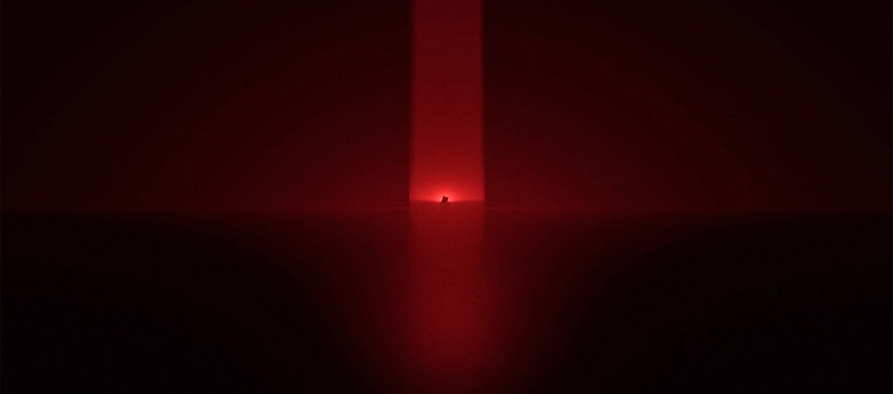
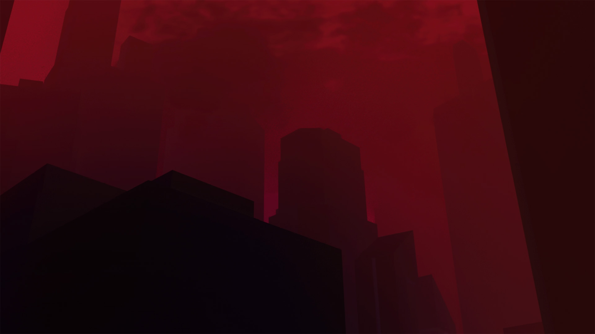
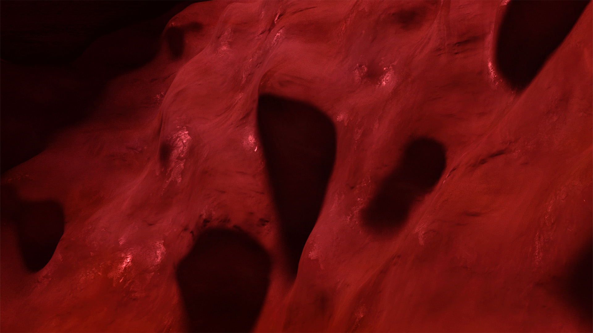

 A lullaby of wrath 3D graphics 2025 A Lullaby of warth is a post-apocalyptic sequence, offering a vision of the precipitous fall of a fictive civilisation. The ruins of this violence come to life and express their past, in a macabre atmosphere.   credit supervised by Kylan Luginbühl ← →